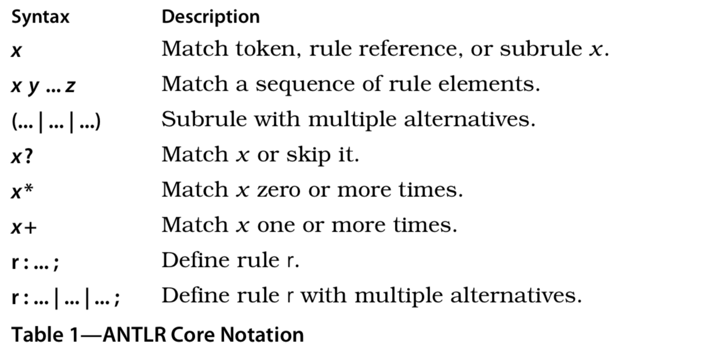
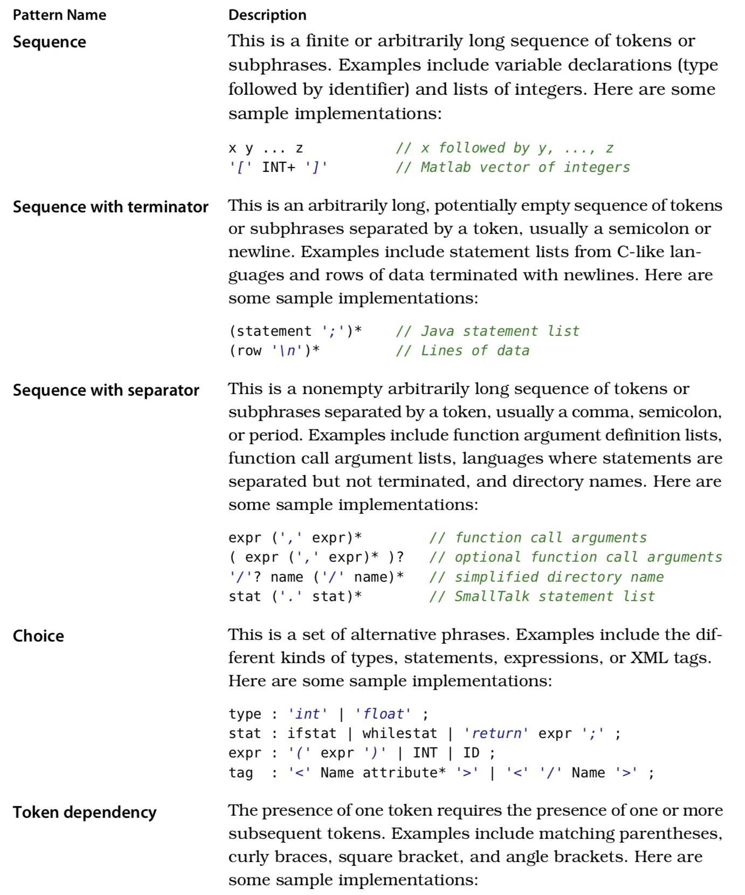

Table of Contents
设计语言的语法
首先我们要学习如何用 grammer 来表达语言的语法。
过去的 50 多年里，出现了非常多的语言，但是它们有很多相似的结构。例如，1 + 2 表达式（{}） 还有这种大括号，标志符，字符串等等。
为了实现这种模式，我们需要了解 BNF。 / ？optional / * zero-or-more // + one-or-more
语法描述文件的开头
grammar MyG;
rule1: <<stuff>>;
rule2: <<more stuff>>;
...
以 csv 为例子：
file: <<rows 序列，以换行结尾>>
row: <<逗号分割的域>>
field: <<数字或字符串>>
java 的例子：
compilationUnit : «optional packageSpec then classDefinitions» ; packageSpec : 'package' identifier ';' ;
classDefinition :
'class' «optional superclassSpec optional implementsClause classBody» ; superclassSpec : 'super' identifier ;
implementsClause :
'implements' «one or more identifiers separated by comma» ; classBody : '{' «zero-or-more members» '}' ;
member : «nested classDefinition or field or method» ; ...
常见的模式
Sequence
例如：
USER parrt
PASS secret
RETR 1
retr 可以表达为：
retr: 'RETR' INT '\n';
当我们想表达[1 2 3 4 5 ..] 这样的模式时可以
(INT) +;
csv 文件可以这样表达：
file: (row '\n') *;
row : field (',' field)*;
filed: INT; // 假设只有数字
('' expr)? 和
('' expr |)是等价的
选择模式
为了使用选择，可以使用 | 或者 "or" 操作符。
还是 csv 的例子：
field: INT | STRING;
Token Dependency 模式
类似：
vector: '[' INT+ ']';
或者：
expr: expr '(' exprList? ')' | expr '[' expr ']';
Nested Phrase
stat: 'while' '(' expr ')' stat | '{' stat* '}';


ANTLR v4 可以处理直接左递归，但是不能处理间接左递归,例如这样的：
expr: expo | ...;
expo: expr + expr;
ID: ('a' .. 'z' | 'A' .. 'Z') 和 ID: [a-zA-Z]等价
匹配数字：
INT: [0-9]+;
定义浮点数要麻烦些：
FLOAT: DIGIT+ '.' DIGIT* | '.' DIGIT+;
fragment:
DIGIT: [0-9];
~x 匹配除了 x 以外的所有内容
比如有这样的 log：
192.168.209.85 "GET /download/foo.html HTTP/1.0" 200
可以定义如下：
file : row+ ; // parser rule matching rows of log file
row : IP STRING INT NL ; // match log file record
IP : INT '.' INT '.' INT '.' INT ; // 192.168.209.85
INT : [0-9]+ ;
STRING: '"' .*? '"' ; NL : '\n' ;
WS :''->skip;